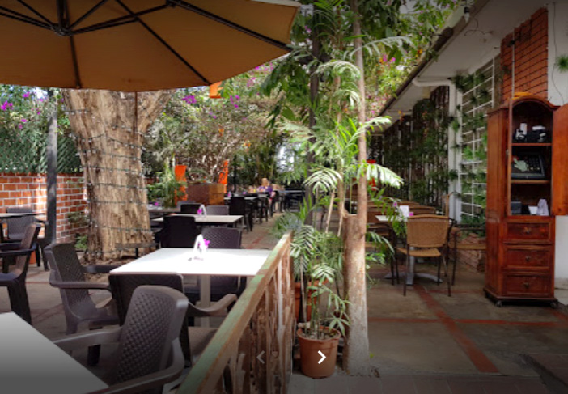
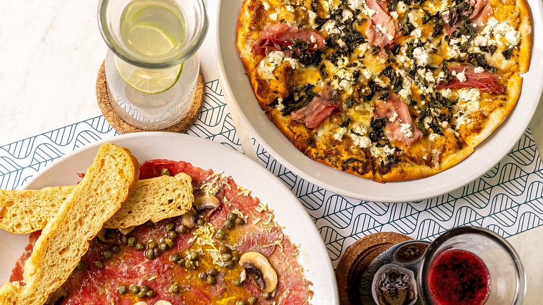
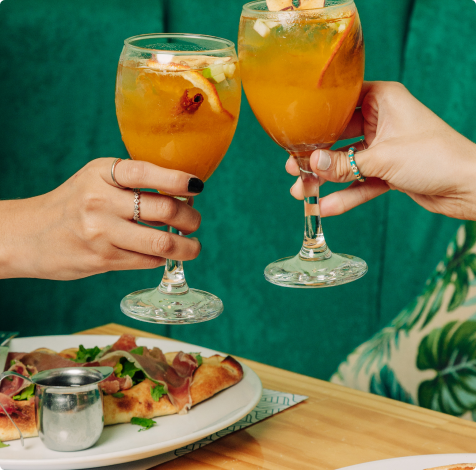

Delikat es un exclusivo restaurante de alta cocina en San Salvador, reconocido por su ambiente elegante, atención personalizada y su refinada propuesta gastronómica. Ofrece una experiencia única con platillos gourmet preparados con ingredientes selectos, ideales para cenas especiales, reuniones de negocios o celebraciones inolvidables.
Horarios: Lunes a Domingo: 12:00 pm – 11:00 pm
Teléfono: +503 2250-1234
📍 Boulevard del Hipódromo, Zona Rosa, San Salvador, El Salvador


